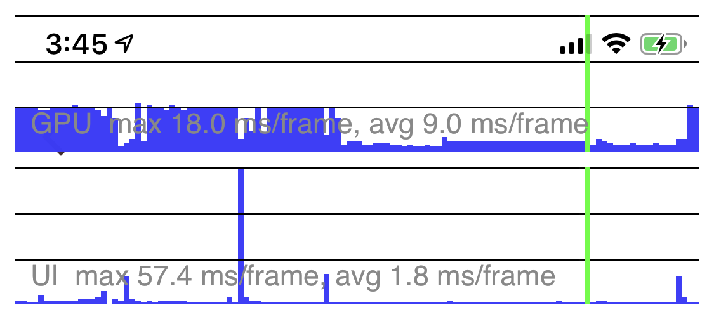
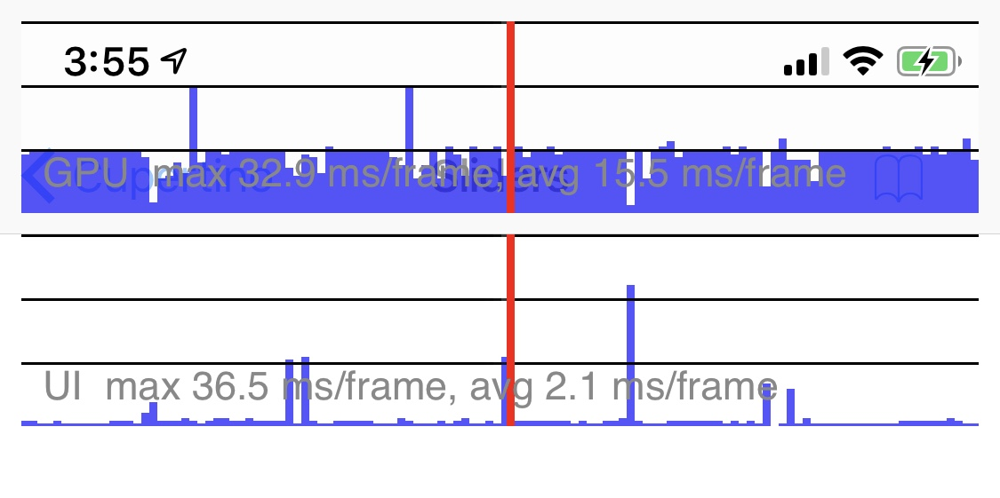
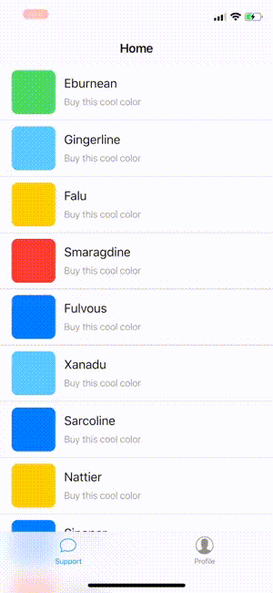
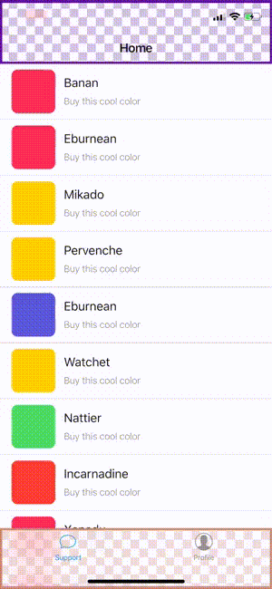
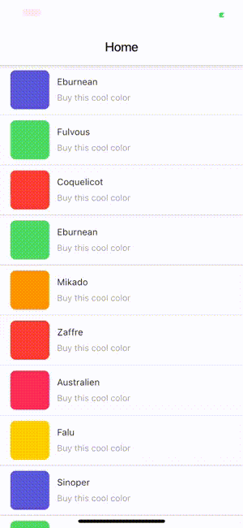
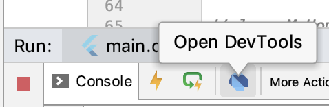
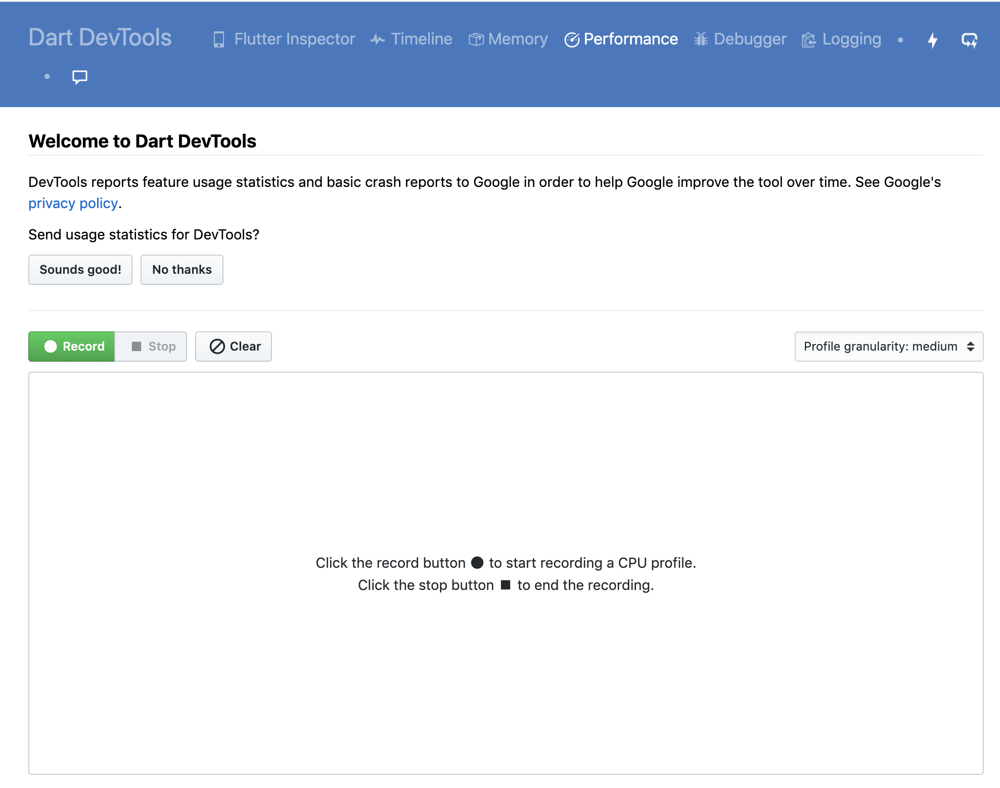
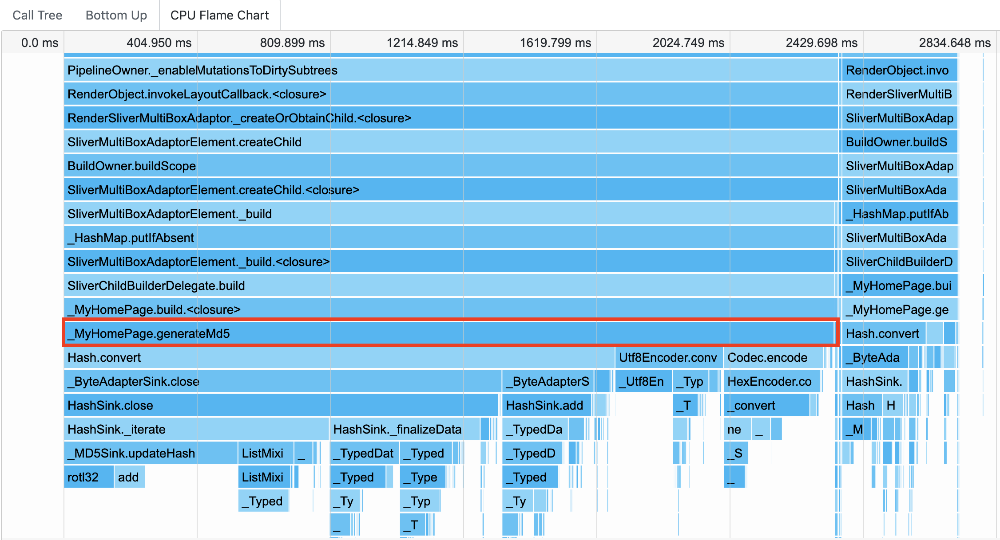

你好，我是陈航。
在上一篇文章中，我与你分享了调试 Flutter 代码的 3 种基本方式，即输出日志、断点调试与布局调试。
通过可定制打印行为的 debugPrint 函数，我们可以实现生产环境与开发环境不同的日志输出行为，从而保证在开发期打印的调试信息不会被发布至线上；借助于 IDE（Android Studio）所提供的断点调试选项，我们可以不断调整代码执行步长和代码暂停条件，收敛问题发生范围，直至找到问题根源；而如果我们想找出代码中的布局渲染类 Bug，则可以通过 Debug Painting 和 Flutter Inspector 提供的辅助线和视图可视化信息，来更为精准地定位视觉问题。
除了代码逻辑 Bug 和视觉异常这些功能层面的问题之外，移动应用另一类常见的问题是性能问题，比如滑动操作不流畅、页面出现卡顿丢帧现象等。这些问题虽然不至于让移动应用完全不可用，但也很容易引起用户反感，从而对应用质量产生质疑，甚至失去耐心。
那么，如果应用渲染并不流畅，出现了性能问题，我们该如何检测，又该从哪里着手处理呢？
在 Flutter 中，性能问题可以分为 GPU 线程问题和 UI 线程（CPU）问题两类。这些问题的确认都需要先通过性能图层进行初步分析，而一旦确认问题存在，接下来就需要利用 Flutter 提供的各类分析工具来定位问题了。
所以在今天这篇文章中，我会与你一起学习分析 Flutter 应用性能问题的基本思路和工具，以及常见的优化办法。
如何使用性能图层？
要解决问题，我们首先得了解如何去度量问题，性能分析也不例外。Flutter 提供了度量性能问题的工具和手段，来帮助我们快速定位代码中的性能问题，而性能图层就是帮助我们确认问题影响范围的利器。
为了使用性能图层，我们首先需要以分析（Profile）模式启动应用。与调试代码可以通过模拟器在调试模式下找到代码逻辑 Bug 不同，性能问题需要在发布模式下使用真机进行检测。
这是因为，相比发布模式而言，调试模式增加了很多额外的检查（比如断言），这些检查可能会耗费很多资源；更重要的是，调试模式使用 JIT 模式运行应用，代码执行效率较低。这就使得调试模式运行的应用，无法真实反映出它的性能问题。
而另一方面，模拟器使用的指令集为 x86，而真机使用的指令集是 ARM。这两种方式的二进制代码执行行为完全不同，因此模拟器与真机的性能差异较大：一些 x86 指令集擅长的操作模拟器会比真机快，而另一些操作则会比真机慢。这也使得我们无法使用模拟器来评估真机才能出现的性能问题。
为了调试性能问题，我们需要在发布模式的基础之上，为分析工具提供少量必要的应用追踪信息，这就是分析模式。除了一些调试性能问题必须的追踪方法之外，Flutter 应用的分析模式和发布模式的编译和运行是类似的，只是启动参数变成了 profile 而已：我们既可以在 Android Studio 中通过菜单栏点击 Run->Profile ‘main.dart’ 选项启动应用，也可以通过命令行参数 flutter run --profile 运行 Flutter 应用。
分析渲染问题
在完成了应用启动之后，接下来我们就可以利用 Flutter 提供的渲染问题分析工具，即性能图层（Performance Overlay），来分析渲染问题了。
性能图层会在当前应用的最上层，以 Flutter 引擎自绘的方式展示 GPU 与 UI 线程的执行图表，而其中每一张图表都代表当前线程最近 300 帧的表现，如果 UI 产生了卡顿（跳帧），这些图表可以帮助我们分析并找到原因。
下图演示了性能图层的展现样式。其中，GPU 线程的性能情况在上面，UI 线程的情况显示在下面，蓝色垂直的线条表示已执行的正常帧，绿色的线条代表的是当前帧：

为了保持 60Hz 的刷新频率，GPU 线程与 UI 线程中执行每一帧耗费的时间都应该小于 16ms（1/60 秒）。在这其中有一帧处理时间过长，就会导致界面卡顿，图表中就会展示出一个红色竖条。下图演示了应用出现渲染和绘制耗时的情况下，性能图层的展示样式：

如果红色竖条出现在 GPU 线程图表，意味着渲染的图形太复杂，导致无法快速渲染；而如果是出现在了 UI 线程图表，则表示 Dart 代码消耗了大量资源，需要优化代码执行时间。
接下来，我们就先看看 GPU 问题定位吧。
GPU 问题定位
GPU 问题主要集中在底层渲染耗时上。有时候 Widget 树虽然构造起来容易，但在 GPU 线程下的渲染却很耗时。涉及 Widget 裁剪、蒙层这类多视图叠加渲染，或是由于缺少缓存导致静态图像的反复绘制，都会明显拖慢 GPU 的渲染速度。
我们可以使用性能图层提供的两项参数，即检查多视图叠加的视图渲染开关 checkerboardOffscreenLayers，和检查缓存的图像开关 checkerboardRasterCacheImages，来检查这两种情况。
checkerboardOffscreenLayers
多视图叠加通常会用到 Canvas 里的 savaLayer 方法，这个方法在实现一些特定的效果（比如半透明）时非常有用，但由于其底层实现会在 GPU 渲染上涉及多图层的反复绘制，因此会带来较大的性能问题。
对于 saveLayer 方法使用情况的检查，我们只要在 MaterialApp 的初始化方法中，将 checkerboardOffscreenLayers 开关设置为 true，分析工具就会自动帮我们检测多视图叠加的情况了：使用了 saveLayer 的 Widget 会自动显示为棋盘格式，并随着页面刷新而闪烁。
不过，saveLayer 是一个较为底层的绘制方法，因此我们一般不会直接使用它，而是会通过一些功能性 Widget，在涉及需要剪切或半透明蒙层的场景中间接地使用。所以一旦遇到这种情况，我们需要思考一下是否一定要这么做，能不能通过其他方式来实现呢。
比如下面的例子中，我们使用 CupertinoPageScaffold 与 CupertinoNavigationBar 实现了一个动态模糊的效果。
CupertinoPageScaffold( navigationBar: CupertinoNavigationBar(),// 动态模糊导航栏 child: ListView.builder( itemCount: 100, // 为列表创建 100 个不同颜色的 RowItem itemBuilder: (context, index)=>TabRowItem( index: index, lastItem: index == 100 - 1, color: colorItems[index],// 设置不同的颜色 colorName: colorNameItems[index], ) ));
由于视图滚动过程中频繁涉及视图蒙层效果的更新，因此 checkerboardOffscreenLayers 检测图层也感受到了对 GPU 的渲染压力，频繁的刷新闪烁。

如果我们没有对动态模糊效果的特殊需求，则可以使用不带模糊效果的 Scaffold 和白色的 AppBar 实现同样的产品功能，来解决这个性能问题：
Scaffold( // 使用普通的白色 AppBar appBar: AppBar(title: Text('Home', style: TextStyle(color:Colors.black),),backgroundColor: Colors.white), body: ListView.builder( itemCount: 100, // 为列表创建 100 个不同颜色的 RowItem itemBuilder: (context, index)=>TabRowItem( index: index, lastItem: index == 100 - 1, color: colorItems[index],// 设置不同的颜色 colorName: colorNameItems[index], ) ),);运行一下代码，可以看到，在去掉了动态模糊效果之后，GPU 的渲染压力得到了缓解，checkerboardOffscreenLayers 检测图层也不再频繁闪烁了。

checkerboardRasterCacheImages
从资源的角度看，另一类非常消耗性能的操作是，渲染图像。这是因为图像的渲染涉及 I/O、GPU 存储，以及不同通道的数据格式转换，因此渲染过程的构建需要消耗大量资源。为了缓解 GPU 的压力，Flutter 提供了多层次的缓存快照，这样 Widget 重建时就无需重新绘制静态图像了。
与检查多视图叠加渲染的 checkerboardOffscreenLayers 参数类似，Flutter 也提供了检查缓存图像的开关 checkerboardRasterCacheImages，来检测在界面重绘时频繁闪烁的图像（即没有静态缓存）。
我们可以把需要静态缓存的图像加到 RepaintBoundary 中，RepaintBoundary 可以确定 Widget 树的重绘边界，如果图像足够复杂，Flutter 引擎会自动将其缓存，避免重复刷新。当然，因为缓存资源有限，如果引擎认为图像不够复杂，也可能会忽略 RepaintBoundary。
如下代码展示了通过 RepaintBoundary，将一个静态复合 Widget 加入缓存的具体用法。可以看到，RepaintBoundary 在使用上与普通 Widget 并无区别：
RepaintBoundary(// 设置静态缓存图像 child: Center( child: Container( color: Colors.black, height: 10.0, width: 10.0, ),));UI 线程问题定位
如果说 GPU 线程问题定位的是渲染引擎底层渲染异常，那么 UI 线程问题发现的则是应用的性能瓶颈。比如在视图构建时，在 build 方法中使用了一些复杂的运算，或是在主 Isolate 中进行了同步的 I/O 操作。这些问题，都会明显增加 CPU 的处理时间，拖慢应用的响应速度。
这时，我们可以使用 Flutter 提供的 Performance 工具，来记录应用的执行轨迹。Performance 是一个强大的性能分析工具，能够以时间轴的方式展示 CPU 的调用栈和执行时间，去检查代码中可疑的方法调用。
在点击了 Android Studio 底部工具栏中的“Open DevTools”按钮之后，系统会自动打开 Dart DevTools 的网页，将顶部的 tab 切换到 Performance 后，我们就可以开始分析代码中的性能问题了。


接下来，我们通过一个 ListView 中计算 MD5 的例子，来演示 Performance 的具体分析过程。
考虑到在 build 函数中进行渲染信息的组装是一个常见的操作，为了演示这个知识点，我们故意放大了计算 MD5 的耗时，循环迭代计算了 1 万次：
class MyHomePage extends StatelessWidget { MyHomePage({Key key}) : super(key: key); String generateMd5(String data) { //MD5 固定算法 var content = new Utf8Encoder().convert(data); var digest = md5.convert(content); return hex.encode(digest.bytes); } @override Widget build(BuildContext context) { return Scaffold( appBar: AppBar(title: Text('demo')), body: ListView.builder( itemCount: 30,// 列表元素个数 itemBuilder: (context, index) { // 反复迭代计算 MD5 String str = '1234567890abcdefghijklmnopqrstuvwxyz'; for(int i = 0;i<10000;i++) { str = generateMd5(str); } return ListTile(title: Text("Index : $index"), subtitle: Text(str)); }// 列表项创建方法 ), ); }}与性能图层能够自动记录应用执行情况不同，使用 Performance 来分析代码执行轨迹，我们需要手动点击“Record”按钮去主动触发，在完成信息的抽样采集后，点击“Stop”按钮结束录制。这时，我们就可以得到在这期间应用的执行情况了。
Performance 记录的应用执行情况叫做 CPU 帧图，又被称为火焰图。火焰图是基于记录代码执行结果所产生的图片，用来展示 CPU 的调用栈，表示的是 CPU 的繁忙程度。
其中，y 轴表示调用栈，其每一层都是一个函数。调用栈越深，火焰就越高，底部就是正在执行的函数，上方都是它的父函数；x 轴表示单位时间，一个函数在 x 轴占据的宽度越宽，就表示它被采样到的次数越多，即执行时间越长。
所以，我们要检测 CPU 耗时问题，皆可以查看火焰图底部的哪个函数占据的宽度最大。只要有“平顶”，就表示该函数可能存在性能问题。比如，我们这个案例的火焰图如下所示：

可以看到，_MyHomePage.generateMd5 函数的执行时间最长，几乎占满了整个火焰图的宽，而这也与代码中存在的问题是一致的。
在找到了问题之后，我们就可以使用 Isolate（或 compute）将这些耗时的操作挪到并发主 Isolate 之外去完成了。
总结
好了，今天的分享就到这里。我们总结一下今天的主要内容吧。
在 Flutter 中，性能分析过程可以分为 GPU 线程问题定位和 UI 线程（CPU）问题定位，而它们都需要在真机上以分析模式（Profile）启动应用，并通过性能图层分析大致的渲染问题范围。一旦确认问题存在，接下来就需要利用 Flutter 所提供的分析工具来定位问题原因了。
关于 GPU 线程渲染问题，我们可以重点检查应用中是否存在多视图叠加渲染，或是静态图像反复刷新的现象。而 UI 线程渲染问题，我们则是通过 Performance 工具记录的火焰图（CPU 帧图），分析代码耗时，找出应用执行瓶颈。
通常来说，由于 Flutter 采用基于声明式的 UI 设计理念，以数据驱动渲染，并采用 Widget->Element->RenderObject 三层结构，屏蔽了无谓的界面刷新，能够保证绝大多数情况下我们构建的应用都是高性能的，所以在使用分析工具检测出性能问题之后，通常我们并不需要做太多的细节优化工作，只需要在改造过程中避开一些常见的坑，就可以获得优异的性能。比如：
- 控制 build 方法耗时，将 Widget 拆小，避免直接返回一个巨大的 Widget，这样 Widget 会享有更细粒度的重建和复用；
- 尽量不要为 Widget 设置半透明效果，而是考虑用图片的形式代替，这样被遮挡的 Widget 部分区域就不需要绘制了；
- 对列表采用懒加载而不是直接一次性创建所有的子 Widget，这样视图的初始化时间就减少了。
思考题
最后，我给你留下一道思考题吧。
请你改造 ListView 计算 MD5 的示例，在保证原有功能的情况下，使用并发 Isolate（或 compute）完成 MD5 的计算。提示：计算过程可以使用 CircularProgressIndicator 来展示加载动画。
欢迎你在评论区给我留言分享你的观点，我会在下一篇文章中等待你！感谢你的收听，也欢迎你把这篇文章分享给更多的朋友一起阅读。

COMMUNITY NOTES
读者评论
想请教下，看了dart的单线程执行异步任务，像future这种执行网络请求的话，直接把任务放进event queue同步执行，那么then的任务如何处理，等网络请求返回再放进event queue?整个过程是怎样的，谢谢
感谢老师分享。